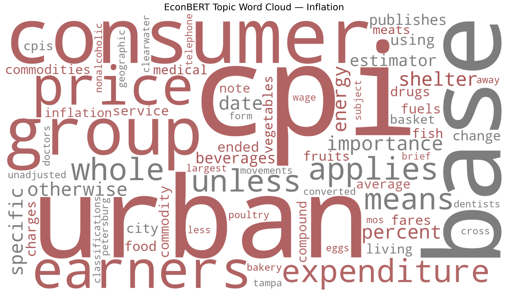
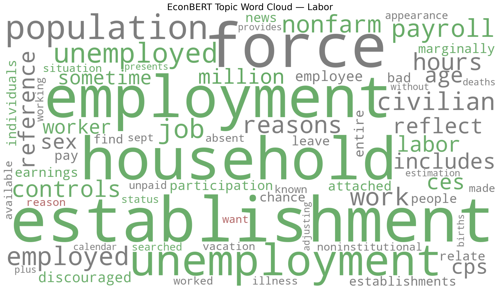
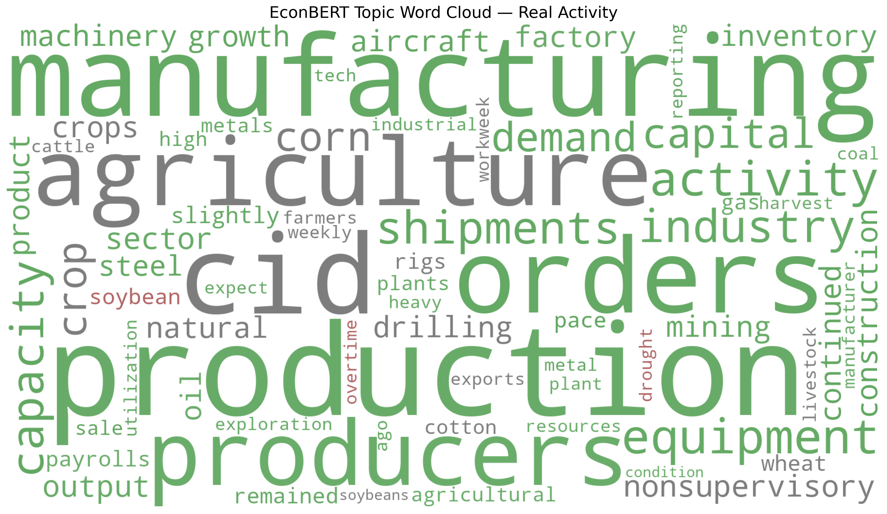
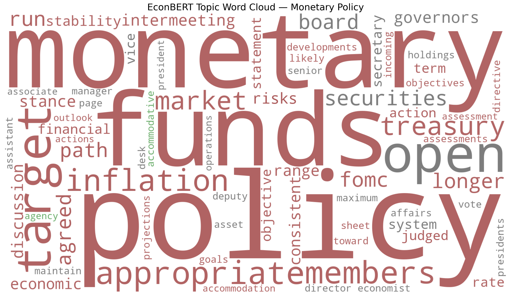
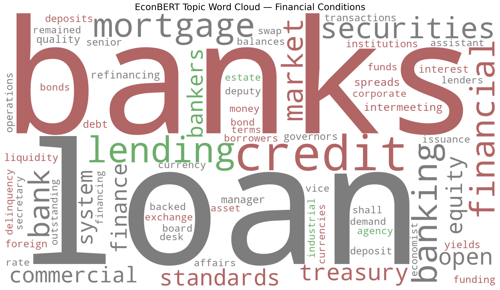
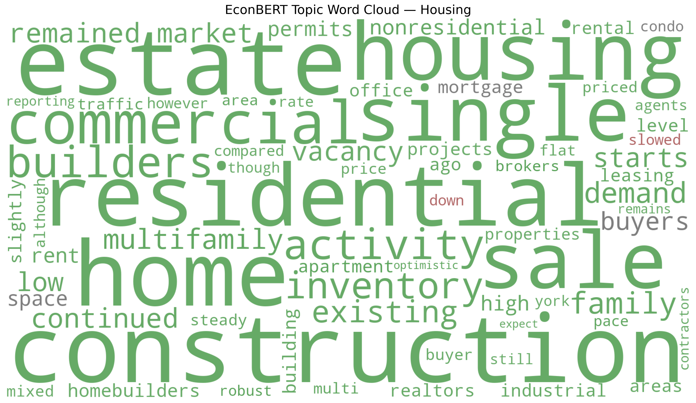
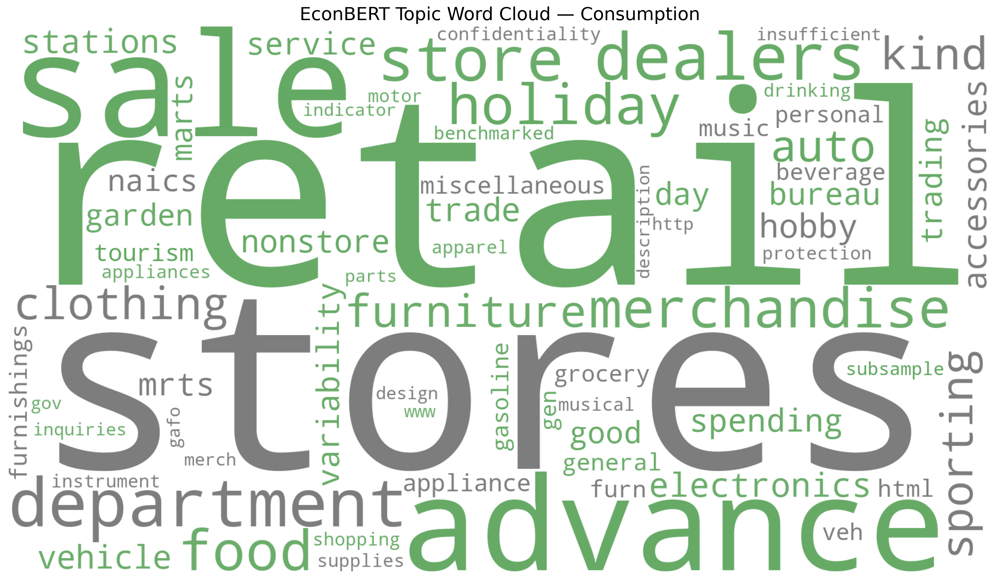
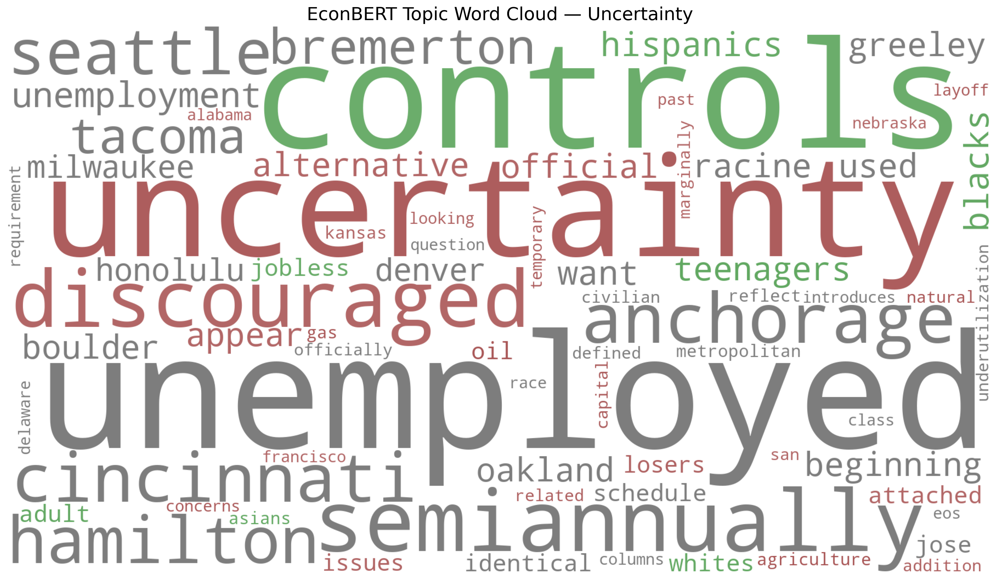

Economic intelligence corpus
Official Fed, BLS, and Census narratives form the core. An expanding ProQuest news corpus brings higher-frequency reporting on markets, fiscal policy, and financial risk into the research agenda.
02 / EconBERT
What is changing in the economy—and what deserves a closer look in markets? EconBERT turns economic text into structured measures of economic tone across growth, inflation, financial conditions, and risk. It gives quantitative researchers, investment teams, and portfolio leaders a consistent lens on the economic narrative, beyond whether a headline simply sounds optimistic or pessimistic.
Try EconBERT on your own textOfficial Fed, BLS, and Census narratives form the core. An expanding ProQuest news corpus brings higher-frequency reporting on markets, fiscal policy, and financial risk into the research agenda.
An LLM teacher applies a macroeconomic rubric to label passages positive, neutral, or negative. The target is economic direction, not emotional wording: easing price pressure can signal improvement even in a cautious statement.
Teacher-generated labels transfer the task to a compact DistilBERT student. This label-based distillation makes repeated scoring practical; the research model is fitted on pre-2013 documents and then frozen for out-of-sample evaluation.
Passage scores become source-balanced monthly tone indices. A complementary index combines eight economic themes. Paired with real-time data vintages, these let researchers test whether narratives add timely information to macro and market forecasts.
The information set
A common economic lens across different kinds of text. Official documents anchor the current model; higher-frequency news broadens the questions the research can ask.
Core research corpus
Federal Reserve Beige Books and FOMC minutes; BLS employment and CPI releases; Census retail-sales reports.
Policy · Prices · ActivityNews extension · ProQuest
Global Newsstream coverage from major U.S. newspapers, including The Wall Street Journal and The New York Times, plus Dow Jones Institutional News.
Datasets 1A & 1B · Higher-frequency reportingNews extension · ProQuest
ProQuest One Academic collections on U.S. fiscal policy, financial stability and bank regulation, and macro-financial risk and stress.
Datasets 4, 5 & 7 · Policy and risk coverageThe high-frequency news extension is ongoing research; its contribution to volatility forecasting is still being evaluated.
Explore the economic language
These word clouds show the vocabulary of each topic and its associated economic tone. Explore a theme to see how its narrative can frame a different investment-research question.

01 / Inflation and prices
Inflation language connects household purchasing power, firms’ cost pressures, and the policy outlook. Economic context matters more than the emotional charge of a word.
Investment-research question
Are price pressures easing—or shifting between consumer demand, input costs, and margins?
Rates · Equities · Commodities

02 / Labor market
Employment narratives connect hiring, labor supply, wages, and household income—dimensions that a single headline payroll number cannot fully describe.
Investment-research question
Is hiring moderating alongside resilient demand, or pointing to a broader slowdown?
Equities · Rates · Multi-asset

03 / Real activity
Language about production, orders, and business activity provides a narrative view of the real economy alongside released macroeconomic data.
Investment-research question
Is momentum broadening across the economy, or becoming concentrated in a few sectors?
Cyclical equities · Commodities · Macro

04 / Monetary policy
Central-bank communication links the outlook for activity and inflation to policy decisions. Economic tone is distinct from a simple hawkish-versus-dovish label.
Investment-research question
How is the balance of growth and inflation concerns evolving around policy decisions?
Rates · FX · Equity duration

05 / Financial conditions
Banking and credit narratives describe how financing conditions reach households and firms, complementing market-based measures of financial stress.
Investment-research question
Are tighter lending conditions becoming a headwind for investment and demand?
Credit · Financial equities · Multi-asset

06 / Housing
Housing narratives connect affordability, residential construction, and sales with the wider transmission of interest rates and household demand.
Investment-research question
Is the housing narrative signaling renewed demand or continued financing pressure?
Real estate · Homebuilders · Materials

07 / Consumption and retail sales
Retail and spending narratives add context to changes in household demand, connecting the macro outlook with questions about consumer-facing sectors.
Investment-research question
Is spending strength widespread, or masking softer demand in particular categories?
Consumer equities · Credit · Macro

08 / Uncertainty and downside risks
Risk language can reflect uncertainty about the outlook or evidence of weaker conditions. The distinction matters when interpreting cautious economic communication.
Investment-research question
Are downside concerns becoming broader or more economically specific?
Risk research · Credit · Multi-asset
Word size indicates topic distinctiveness. Color indicates average EconBERT economic tone—not a fixed positive or negative dictionary entry.
Original word clouds from the job market paper, Figures 4–5 (September 26, 2026), based on the official-document corpus. These are descriptive views of language, not trading signals or evidence of asset-specific forecast performance.
Built for research, not just a score
For a quant team, narrative indices can sit alongside structured data in a forecasting pipeline. For investment analysts and portfolio leaders, the eight themes provide a consistent way to organize questions about the cycle, policy, and risk.
The job market paper evaluates monthly indices in real-time nowcasting and forecasting exercises spanning macroeconomic activity, Treasury rates, equity returns, volatility, and credit conditions. Applications to individual sectors, FX, and commodities are research opportunities, not demonstrated trading results.